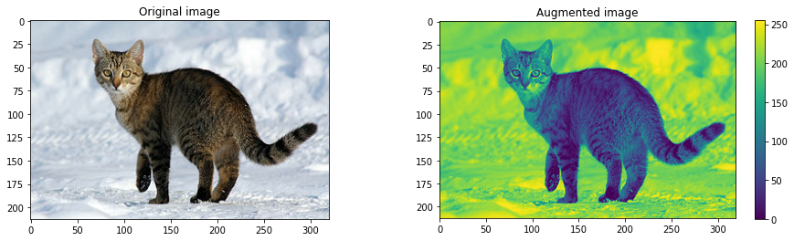
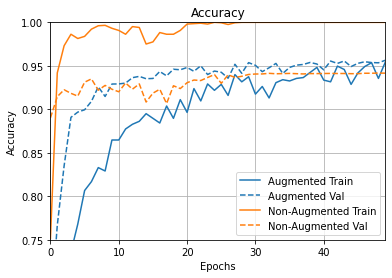

Data Augmentation usando tf.image¶
30 min | Última modificación: Abril 8, 2020.
Basado en https://www.tensorflow.org/tutorials/images/data_augmentation
Importación de librerías¶
[1]:
import os
import urllib
import numpy as np
import PIL.Image as Image
import matplotlib.pyplot as plt
import matplotlib as mpl
%matplotlib inline
import tensorflow as tf
import tensorflow_hub as hub
import tensorflow_datasets as tfds
tfds.disable_progress_bar()
print(tf.__version__)
print(hub.__version__)
AUTOTUNE = tf.data.experimental.AUTOTUNE
#
# Librerias adicionales para graficación
#
import tensorflow_docs as tfdocs
import tensorflow_docs.plots
import tensorflow_docs.modeling
#
# Establece el nivel de reporte en
# pantalla de TensorFlow
#
import logging
logger = tf.get_logger().setLevel(logging.ERROR)
2.1.0
0.8.0
Transformación de una sola imagen¶
Preparación¶
[2]:
image_path = tf.keras.utils.get_file(
"cat.jpg",
"https://storage.googleapis.com/download.tensorflow.org/example_images/320px-Felis_catus-cat_on_snow.jpg",
)
Image.open(image_path)
[2]:
[3]:
#
# Carga y decodificación de la imágen
#
image_string = tf.io.read_file(image_path)
image = tf.image.decode_jpeg(image_string, channels=3)
[4]:
#
# Función para visualizar y compara dos imágenes
#
def visualize(original, augmented):
plt.figure(figsize=(16, 4))
plt.subplot(1, 2, 1)
plt.title("Original image")
plt.imshow(original)
plt.subplot(1, 2, 2)
plt.title("Augmented image")
plt.imshow(augmented)

Cambiar a una escala de colores¶
[6]:
visualize(image, tf.squeeze(tf.image.rgb_to_grayscale(image)))
plt.colorbar();



Transformación de un dataset¶
[11]:
dataset, info = tfds.load("mnist", as_supervised=True, with_info=True)
train_dataset, test_dataset = dataset["train"], dataset["test"]
num_train_examples = info.splits["train"].num_examples
Downloading and preparing dataset mnist/3.0.0 (download: 11.06 MiB, generated: Unknown size, total: 11.06 MiB) to /root/tensorflow_datasets/mnist/3.0.0...
WARNING:absl:Dataset mnist is hosted on GCS. It will automatically be downloaded to your
local data directory. If you'd instead prefer to read directly from our public
GCS bucket (recommended if you're running on GCP), you can instead set
data_dir=gs://tfds-data/datasets.
Dataset mnist downloaded and prepared to /root/tensorflow_datasets/mnist/3.0.0. Subsequent calls will reuse this data.
[12]:
#
# Funciones para la transformación de las imágenes
#
def convert(image, label):
image = tf.image.convert_image_dtype(image, tf.float32)
return image, label
def augment(image, label):
image, label = convert(image, label)
image = tf.image.convert_image_dtype(image, tf.float32)
image = tf.image.resize_with_crop_or_pad(image, 34, 34)
image = tf.image.random_crop(image, size=[28, 28, 1])
image = tf.image.random_brightness(image, max_delta=0.5)
return image, label
BATCH_SIZE = 64
NUM_EXAMPLES = 2048
augmented_train_batches = (
train_dataset.take(NUM_EXAMPLES)
.cache()
.shuffle(num_train_examples // 4)
.map(augment, num_parallel_calls=AUTOTUNE)
.batch(BATCH_SIZE)
.prefetch(AUTOTUNE)
)
non_augmented_train_batches = (
train_dataset.take(NUM_EXAMPLES)
.cache()
.shuffle(num_train_examples // 4)
.map(convert, num_parallel_calls=AUTOTUNE)
.batch(BATCH_SIZE)
.prefetch(AUTOTUNE)
)
validation_batches = test_dataset.map(convert, num_parallel_calls=AUTOTUNE).batch(
2 * BATCH_SIZE
)
Creación y entrenamiento de los modelos¶
[13]:
def make_model():
model = tf.keras.Sequential(
[
tf.keras.layers.Flatten(input_shape=(28, 28, 1)),
tf.keras.layers.Dense(4096, activation="relu"),
tf.keras.layers.Dense(4096, activation="relu"),
tf.keras.layers.Dense(10),
]
)
model.compile(
optimizer="adam",
loss=tf.losses.SparseCategoricalCrossentropy(from_logits=True),
metrics=["accuracy"],
)
return model
[14]:
model_without_aug = make_model()
no_aug_history = model_without_aug.fit(
non_augmented_train_batches, epochs=50, validation_data=validation_batches
)
Epoch 1/50
32/32 [==============================] - 12s 385ms/step - loss: 0.8227 - accuracy: 0.7515 - val_loss: 0.3680 - val_accuracy: 0.8903
Epoch 2/50
32/32 [==============================] - 12s 363ms/step - loss: 0.1862 - accuracy: 0.9419 - val_loss: 0.2899 - val_accuracy: 0.9146
Epoch 3/50
32/32 [==============================] - 13s 394ms/step - loss: 0.0807 - accuracy: 0.9731 - val_loss: 0.2753 - val_accuracy: 0.9225
Epoch 4/50
32/32 [==============================] - 14s 439ms/step - loss: 0.0403 - accuracy: 0.9863 - val_loss: 0.3301 - val_accuracy: 0.9184
Epoch 5/50
32/32 [==============================] - 13s 399ms/step - loss: 0.0626 - accuracy: 0.9814 - val_loss: 0.3565 - val_accuracy: 0.9152
Epoch 6/50
32/32 [==============================] - 13s 393ms/step - loss: 0.0419 - accuracy: 0.9839 - val_loss: 0.3192 - val_accuracy: 0.9312
Epoch 7/50
32/32 [==============================] - 12s 384ms/step - loss: 0.0254 - accuracy: 0.9922 - val_loss: 0.3323 - val_accuracy: 0.9350
Epoch 8/50
32/32 [==============================] - 19s 594ms/step - loss: 0.0137 - accuracy: 0.9961 - val_loss: 0.4170 - val_accuracy: 0.9220
Epoch 9/50
32/32 [==============================] - 31s 961ms/step - loss: 0.0144 - accuracy: 0.9966 - val_loss: 0.3459 - val_accuracy: 0.9275
Epoch 10/50
32/32 [==============================] - 24s 763ms/step - loss: 0.0211 - accuracy: 0.9932 - val_loss: 0.3912 - val_accuracy: 0.9231
Epoch 11/50
32/32 [==============================] - 21s 662ms/step - loss: 0.0293 - accuracy: 0.9907 - val_loss: 0.4070 - val_accuracy: 0.9202
Epoch 12/50
32/32 [==============================] - 16s 512ms/step - loss: 0.0568 - accuracy: 0.9863 - val_loss: 0.3388 - val_accuracy: 0.9303
Epoch 13/50
32/32 [==============================] - 15s 455ms/step - loss: 0.0139 - accuracy: 0.9951 - val_loss: 0.4035 - val_accuracy: 0.9232
Epoch 14/50
32/32 [==============================] - 15s 468ms/step - loss: 0.0221 - accuracy: 0.9941 - val_loss: 0.4000 - val_accuracy: 0.9292
Epoch 15/50
32/32 [==============================] - 14s 445ms/step - loss: 0.0861 - accuracy: 0.9751 - val_loss: 0.5370 - val_accuracy: 0.9084
Epoch 16/50
32/32 [==============================] - 15s 476ms/step - loss: 0.0806 - accuracy: 0.9775 - val_loss: 0.4970 - val_accuracy: 0.9186
Epoch 17/50
32/32 [==============================] - 15s 465ms/step - loss: 0.0401 - accuracy: 0.9883 - val_loss: 0.4349 - val_accuracy: 0.9231
Epoch 18/50
32/32 [==============================] - 15s 459ms/step - loss: 0.0528 - accuracy: 0.9863 - val_loss: 0.5789 - val_accuracy: 0.9067
Epoch 19/50
32/32 [==============================] - 16s 495ms/step - loss: 0.0716 - accuracy: 0.9863 - val_loss: 0.4094 - val_accuracy: 0.9271
Epoch 20/50
32/32 [==============================] - 16s 490ms/step - loss: 0.0338 - accuracy: 0.9907 - val_loss: 0.4355 - val_accuracy: 0.9239
Epoch 21/50
32/32 [==============================] - 18s 559ms/step - loss: 0.0060 - accuracy: 0.9980 - val_loss: 0.3939 - val_accuracy: 0.9306
Epoch 22/50
32/32 [==============================] - 20s 614ms/step - loss: 0.0026 - accuracy: 0.9985 - val_loss: 0.3721 - val_accuracy: 0.9337
Epoch 23/50
32/32 [==============================] - 18s 577ms/step - loss: 0.0023 - accuracy: 0.9990 - val_loss: 0.4249 - val_accuracy: 0.9331
Epoch 24/50
32/32 [==============================] - 23s 712ms/step - loss: 0.0052 - accuracy: 0.9980 - val_loss: 0.3723 - val_accuracy: 0.9366
Epoch 25/50
32/32 [==============================] - 23s 733ms/step - loss: 0.0014 - accuracy: 1.0000 - val_loss: 0.3658 - val_accuracy: 0.9400
Epoch 26/50
32/32 [==============================] - 20s 611ms/step - loss: 0.0018 - accuracy: 0.9995 - val_loss: 0.4562 - val_accuracy: 0.9299
Epoch 27/50
32/32 [==============================] - 19s 597ms/step - loss: 0.0120 - accuracy: 0.9976 - val_loss: 0.3797 - val_accuracy: 0.9397
Epoch 28/50
32/32 [==============================] - 22s 683ms/step - loss: 0.0019 - accuracy: 0.9995 - val_loss: 0.3836 - val_accuracy: 0.9367
Epoch 29/50
32/32 [==============================] - 25s 768ms/step - loss: 1.6507e-04 - accuracy: 1.0000 - val_loss: 0.3739 - val_accuracy: 0.9380
Epoch 30/50
32/32 [==============================] - 22s 697ms/step - loss: 7.0826e-05 - accuracy: 1.0000 - val_loss: 0.3720 - val_accuracy: 0.9401
Epoch 31/50
32/32 [==============================] - 21s 652ms/step - loss: 5.5816e-05 - accuracy: 1.0000 - val_loss: 0.3726 - val_accuracy: 0.9406
Epoch 32/50
32/32 [==============================] - 24s 747ms/step - loss: 4.6921e-05 - accuracy: 1.0000 - val_loss: 0.3731 - val_accuracy: 0.9407
Epoch 33/50
32/32 [==============================] - 21s 659ms/step - loss: 3.9635e-05 - accuracy: 1.0000 - val_loss: 0.3731 - val_accuracy: 0.9414
Epoch 34/50
32/32 [==============================] - 21s 667ms/step - loss: 3.3686e-05 - accuracy: 1.0000 - val_loss: 0.3746 - val_accuracy: 0.9409
Epoch 35/50
32/32 [==============================] - 16s 506ms/step - loss: 2.9068e-05 - accuracy: 1.0000 - val_loss: 0.3754 - val_accuracy: 0.9411
Epoch 36/50
32/32 [==============================] - 16s 508ms/step - loss: 2.5516e-05 - accuracy: 1.0000 - val_loss: 0.3770 - val_accuracy: 0.9413
Epoch 37/50
32/32 [==============================] - 17s 524ms/step - loss: 2.2623e-05 - accuracy: 1.0000 - val_loss: 0.3781 - val_accuracy: 0.9410
Epoch 38/50
32/32 [==============================] - 16s 512ms/step - loss: 2.0259e-05 - accuracy: 1.0000 - val_loss: 0.3799 - val_accuracy: 0.9407
Epoch 39/50
32/32 [==============================] - 16s 499ms/step - loss: 1.8180e-05 - accuracy: 1.0000 - val_loss: 0.3810 - val_accuracy: 0.9411
Epoch 40/50
32/32 [==============================] - 16s 509ms/step - loss: 1.6592e-05 - accuracy: 1.0000 - val_loss: 0.3825 - val_accuracy: 0.9411
Epoch 41/50
32/32 [==============================] - 18s 551ms/step - loss: 1.4982e-05 - accuracy: 1.0000 - val_loss: 0.3840 - val_accuracy: 0.9412
Epoch 42/50
32/32 [==============================] - 16s 494ms/step - loss: 1.3760e-05 - accuracy: 1.0000 - val_loss: 0.3857 - val_accuracy: 0.9413
Epoch 43/50
32/32 [==============================] - 17s 542ms/step - loss: 1.2558e-05 - accuracy: 1.0000 - val_loss: 0.3870 - val_accuracy: 0.9412
Epoch 44/50
32/32 [==============================] - 17s 536ms/step - loss: 1.1574e-05 - accuracy: 1.0000 - val_loss: 0.3883 - val_accuracy: 0.9412
Epoch 45/50
32/32 [==============================] - 16s 510ms/step - loss: 1.0756e-05 - accuracy: 1.0000 - val_loss: 0.3901 - val_accuracy: 0.9410
Epoch 46/50
32/32 [==============================] - 17s 524ms/step - loss: 9.9738e-06 - accuracy: 1.0000 - val_loss: 0.3914 - val_accuracy: 0.9410
Epoch 47/50
32/32 [==============================] - 17s 543ms/step - loss: 9.2279e-06 - accuracy: 1.0000 - val_loss: 0.3927 - val_accuracy: 0.9415
Epoch 48/50
32/32 [==============================] - 17s 520ms/step - loss: 8.6203e-06 - accuracy: 1.0000 - val_loss: 0.3942 - val_accuracy: 0.9415
Epoch 49/50
32/32 [==============================] - 18s 552ms/step - loss: 8.0456e-06 - accuracy: 1.0000 - val_loss: 0.3953 - val_accuracy: 0.9417
Epoch 50/50
32/32 [==============================] - 17s 538ms/step - loss: 7.5283e-06 - accuracy: 1.0000 - val_loss: 0.3970 - val_accuracy: 0.9416
[15]:
model_with_aug = make_model()
aug_history = model_with_aug.fit(
augmented_train_batches, epochs=50, validation_data=validation_batches
)
Epoch 1/50
32/32 [==============================] - 17s 546ms/step - loss: 2.3056 - accuracy: 0.2954 - val_loss: 1.2132 - val_accuracy: 0.6615
Epoch 2/50
32/32 [==============================] - 17s 531ms/step - loss: 1.3472 - accuracy: 0.5620 - val_loss: 0.7401 - val_accuracy: 0.7667
Epoch 3/50
32/32 [==============================] - 16s 514ms/step - loss: 0.9926 - accuracy: 0.6704 - val_loss: 0.5211 - val_accuracy: 0.8350
Epoch 4/50
32/32 [==============================] - 19s 591ms/step - loss: 0.7875 - accuracy: 0.7358 - val_loss: 0.3650 - val_accuracy: 0.8908
Epoch 5/50
32/32 [==============================] - 18s 573ms/step - loss: 0.7082 - accuracy: 0.7681 - val_loss: 0.3452 - val_accuracy: 0.8968
Epoch 6/50
32/32 [==============================] - 16s 513ms/step - loss: 0.5576 - accuracy: 0.8066 - val_loss: 0.3169 - val_accuracy: 0.8995
Epoch 7/50
32/32 [==============================] - 19s 584ms/step - loss: 0.5626 - accuracy: 0.8169 - val_loss: 0.2866 - val_accuracy: 0.9092
Epoch 8/50
32/32 [==============================] - 18s 547ms/step - loss: 0.5056 - accuracy: 0.8330 - val_loss: 0.2480 - val_accuracy: 0.9259
Epoch 9/50
32/32 [==============================] - 17s 525ms/step - loss: 0.4917 - accuracy: 0.8291 - val_loss: 0.2656 - val_accuracy: 0.9148
Epoch 10/50
32/32 [==============================] - 17s 540ms/step - loss: 0.4200 - accuracy: 0.8647 - val_loss: 0.2282 - val_accuracy: 0.9291
Epoch 11/50
32/32 [==============================] - 17s 534ms/step - loss: 0.4007 - accuracy: 0.8647 - val_loss: 0.2280 - val_accuracy: 0.9292
Epoch 12/50
32/32 [==============================] - 17s 544ms/step - loss: 0.3806 - accuracy: 0.8774 - val_loss: 0.2160 - val_accuracy: 0.9302
Epoch 13/50
32/32 [==============================] - 18s 559ms/step - loss: 0.3528 - accuracy: 0.8828 - val_loss: 0.2127 - val_accuracy: 0.9364
Epoch 14/50
32/32 [==============================] - 17s 542ms/step - loss: 0.3598 - accuracy: 0.8862 - val_loss: 0.1981 - val_accuracy: 0.9379
Epoch 15/50
32/32 [==============================] - 18s 555ms/step - loss: 0.3317 - accuracy: 0.8950 - val_loss: 0.2037 - val_accuracy: 0.9352
Epoch 16/50
32/32 [==============================] - 17s 533ms/step - loss: 0.3386 - accuracy: 0.8896 - val_loss: 0.1983 - val_accuracy: 0.9355
Epoch 17/50
32/32 [==============================] - 20s 635ms/step - loss: 0.3644 - accuracy: 0.8843 - val_loss: 0.1835 - val_accuracy: 0.9435
Epoch 18/50
32/32 [==============================] - 21s 663ms/step - loss: 0.2701 - accuracy: 0.9038 - val_loss: 0.1972 - val_accuracy: 0.9385
Epoch 19/50
32/32 [==============================] - 17s 544ms/step - loss: 0.3162 - accuracy: 0.8896 - val_loss: 0.1747 - val_accuracy: 0.9461
Epoch 20/50
32/32 [==============================] - 19s 585ms/step - loss: 0.2632 - accuracy: 0.9111 - val_loss: 0.1785 - val_accuracy: 0.9455
Epoch 21/50
32/32 [==============================] - 18s 563ms/step - loss: 0.2990 - accuracy: 0.8965 - val_loss: 0.1705 - val_accuracy: 0.9481
Epoch 22/50
32/32 [==============================] - 16s 501ms/step - loss: 0.2429 - accuracy: 0.9238 - val_loss: 0.1743 - val_accuracy: 0.9437
Epoch 23/50
32/32 [==============================] - 18s 552ms/step - loss: 0.2900 - accuracy: 0.9097 - val_loss: 0.1705 - val_accuracy: 0.9501
Epoch 24/50
32/32 [==============================] - 16s 509ms/step - loss: 0.2254 - accuracy: 0.9292 - val_loss: 0.1993 - val_accuracy: 0.9400
Epoch 25/50
32/32 [==============================] - 16s 491ms/step - loss: 0.2381 - accuracy: 0.9219 - val_loss: 0.1824 - val_accuracy: 0.9440
Epoch 26/50
32/32 [==============================] - 16s 493ms/step - loss: 0.2156 - accuracy: 0.9287 - val_loss: 0.1821 - val_accuracy: 0.9426
Epoch 27/50
32/32 [==============================] - 18s 554ms/step - loss: 0.2473 - accuracy: 0.9160 - val_loss: 0.2166 - val_accuracy: 0.9358
Epoch 28/50
32/32 [==============================] - 16s 506ms/step - loss: 0.2208 - accuracy: 0.9399 - val_loss: 0.1582 - val_accuracy: 0.9518
Epoch 29/50
32/32 [==============================] - 18s 558ms/step - loss: 0.2162 - accuracy: 0.9316 - val_loss: 0.2000 - val_accuracy: 0.9414
Epoch 30/50
32/32 [==============================] - 17s 539ms/step - loss: 0.1966 - accuracy: 0.9375 - val_loss: 0.1509 - val_accuracy: 0.9537
Epoch 31/50
32/32 [==============================] - 17s 527ms/step - loss: 0.2303 - accuracy: 0.9175 - val_loss: 0.1597 - val_accuracy: 0.9506
Epoch 32/50
32/32 [==============================] - 18s 569ms/step - loss: 0.2201 - accuracy: 0.9263 - val_loss: 0.1861 - val_accuracy: 0.9433
Epoch 33/50
32/32 [==============================] - 18s 578ms/step - loss: 0.2523 - accuracy: 0.9131 - val_loss: 0.1775 - val_accuracy: 0.9478
Epoch 34/50
32/32 [==============================] - 17s 538ms/step - loss: 0.2144 - accuracy: 0.9307 - val_loss: 0.1587 - val_accuracy: 0.9528
Epoch 35/50
32/32 [==============================] - 17s 516ms/step - loss: 0.2071 - accuracy: 0.9341 - val_loss: 0.1803 - val_accuracy: 0.9413
Epoch 36/50
32/32 [==============================] - 17s 535ms/step - loss: 0.1846 - accuracy: 0.9326 - val_loss: 0.1720 - val_accuracy: 0.9482
Epoch 37/50
32/32 [==============================] - 16s 511ms/step - loss: 0.1836 - accuracy: 0.9355 - val_loss: 0.1619 - val_accuracy: 0.9508
Epoch 38/50
32/32 [==============================] - 17s 544ms/step - loss: 0.1879 - accuracy: 0.9365 - val_loss: 0.1695 - val_accuracy: 0.9516
Epoch 39/50
32/32 [==============================] - 17s 534ms/step - loss: 0.1739 - accuracy: 0.9424 - val_loss: 0.1594 - val_accuracy: 0.9539
Epoch 40/50
32/32 [==============================] - 17s 533ms/step - loss: 0.1534 - accuracy: 0.9482 - val_loss: 0.1622 - val_accuracy: 0.9521
Epoch 41/50
32/32 [==============================] - 17s 530ms/step - loss: 0.1957 - accuracy: 0.9336 - val_loss: 0.1741 - val_accuracy: 0.9454
Epoch 42/50
32/32 [==============================] - 16s 507ms/step - loss: 0.2057 - accuracy: 0.9316 - val_loss: 0.1440 - val_accuracy: 0.9555
Epoch 43/50
32/32 [==============================] - 16s 507ms/step - loss: 0.1560 - accuracy: 0.9497 - val_loss: 0.1542 - val_accuracy: 0.9528
Epoch 44/50
32/32 [==============================] - 17s 518ms/step - loss: 0.1586 - accuracy: 0.9458 - val_loss: 0.1442 - val_accuracy: 0.9556
Epoch 45/50
32/32 [==============================] - 17s 516ms/step - loss: 0.2209 - accuracy: 0.9287 - val_loss: 0.1638 - val_accuracy: 0.9492
Epoch 46/50
32/32 [==============================] - 17s 525ms/step - loss: 0.1786 - accuracy: 0.9419 - val_loss: 0.1592 - val_accuracy: 0.9529
Epoch 47/50
32/32 [==============================] - 17s 518ms/step - loss: 0.1571 - accuracy: 0.9492 - val_loss: 0.1501 - val_accuracy: 0.9547
Epoch 48/50
32/32 [==============================] - 17s 538ms/step - loss: 0.1293 - accuracy: 0.9536 - val_loss: 0.1572 - val_accuracy: 0.9538
Epoch 49/50
32/32 [==============================] - 17s 545ms/step - loss: 0.1824 - accuracy: 0.9355 - val_loss: 0.1536 - val_accuracy: 0.9535
Epoch 50/50
32/32 [==============================] - 17s 543ms/step - loss: 0.1313 - accuracy: 0.9541 - val_loss: 0.1557 - val_accuracy: 0.9564
Resultados¶
[16]:
plotter = tfdocs.plots.HistoryPlotter()
plotter.plot(
{"Augmented": aug_history, "Non-Augmented": no_aug_history}, metric="accuracy"
)
plt.title("Accuracy")
plt.ylim([0.75, 1])
[16]:
(0.75, 1.0)

[17]:
plotter = tfdocs.plots.HistoryPlotter()
plotter.plot({"Augmented": aug_history, "Non-Augmented": no_aug_history}, metric="loss")
plt.title("Loss")
plt.ylim([0, 1])
[17]:
(0.0, 1.0)